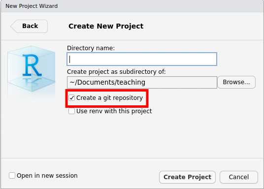
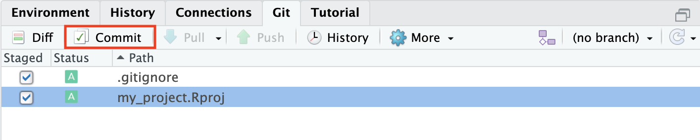
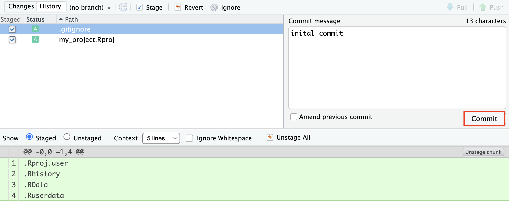
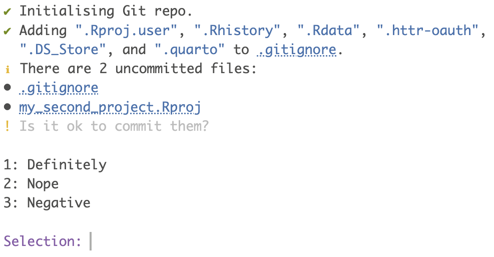

2 Version control with GitHub and RStudio
2.1 Basic workflow
Let’s start by briefly explaining the basic workflow. On GitHub you can make repositories, which is a kind of project. Your online repository, or short repo, is called remote. To use your repository, you need to clone it locally onto your computer and it is then called local. You can write and edit R code locally on your computer. The new code is then committed and pushed back to the remote. If you follow this workflow consistently, GitHub will keep track of all the changes you make.
Definitions
- repo - short for repository
- repository - the directory or folder that is under version control
- local - the repository on your computer
- remote - the repository on GitHub
- commit - take a snapshot of one or more files in the repository
- push - send commits from the local repo to the remote repo
- pull - retrieve commits from the remote repo to the local repo
- .gitignore a file that tells git which files or types of files you don’t want to commit
2.1.1 The workflow
For the sake of this tutorial, Kingsley and Angelina will show us the workflow with RStudio and GitHub.
The general workflow looks like Figure 2.2: Kingsley has a repo on GitHub. He clones the repo on his computer (1). He develops code and makes commits (2). Then he pushes the changes back to the remote repo on GitHub (3). In this tutorial, we will explain each of these steps in detail.

2.2 Installation
You can download and install git from https://git-scm.com/
(For UiB users, you can find git in the Software Center; Mac users need the software xcode)
You can get a GitHub account at https://github.com/: sign up and follow the instructions.

2.3 usethis package
The usethis package makes working with git and GitHub from R and RStudio much easier.
install.packages("usethis")
Exercise
- Install git.
- Once you have done this you will need to restart RStudio if it is open.
- Create a GitHub account.
- Install the
usethisR package.
2.4 Set-up
Now you have to configure your name and email associated with your GitHub account. Go to RStudio and, using your own identification, type in the console:
usethis::use_git_config(
user.name = "kingsleyshaklebolt",
user.email = "kingsleyshaklebolt@ministryofmagic.com"
)The next step is to connect RStudio and GitHub.
Exercise
Configure git with your user name and email.
2.5 Connect RStudio and GitHub
GitHub needs to validate who you are before you can connect it and RStudio. We can do this by generating and saving a Personal Access Token (PAT). You need to do this once for every RStudio project.
usethis::create_github_token()This function will open GitHub. After confirming your password, you will be shown a page to make a new PAT. You don’t need to change any of the options. Just click the green “Generate token” button at the bottom of the page.
The next page will show you your PAT. Copy it by clicking on the clipboard icon and return to R.
Now run this in the console (do not paste the PAT yet!)
gitcreds::gitcreds_set()This will now ask you for your PAT: paste it at the prompt and press return. This will save the PAT so that it can be used to access GitHub. Treat your PAT as a password - never save it in a script.
Depending on your operating system, you might only have to do this once (at least until the PAT expires) or you might need to do it again for every RStudio project.
git vaccinate
git_vaccinate() will add various files to your global .gitignore file (Section 2.10) to reduce the chance of you leaking passwords, making git safer to use.
usethis::git_vaccinate()
Passwords
If you do accidentally commit a password or other token or key, you should assume that it has been compromised (bots search GitHub for these), and immediately replace the password.
Exercise
Generate a GitHub PAT and store it with gitcreds::gitcreds_set(). Then vaccinate git on you computer.
Renaming the default branch
Git repos typically have a default branch (you will learn more about branches in Chapter 3). The traditional name for this branch is “master”, but “main” is now preferred as it is more inclusive. GitHub uses “main” but git still uses “master” (this might change).
On stackoverflow and other help sites, you will see both branch names. The code will work if you use the name you have.
You can set the default for git repos made on your computer by running:
usethis::git_default_branch_configure(name = "main")If you have a repo that still uses master, you can change the name of the default branch of your repo to “main” using: usethis::git_default_branch_rename()
Exercise
Set the default branch of your repo to “main” for all future git repos made on your computer.
2.6 Making a repo
Now you are ready to start using RStudio and GitHub. There are three main workflows:
- Make a new local repo and push it to GitHub
- Push an existing local repo to GitHub
- Clone an existing repo from GitHub onto your computer
We will cover these in turn: choose the best one for your circumstances.
By default, repositories on GitHub are publicly readable. They can be made private if necessary.
This workflow should be used if you are starting a new project.
Create a new RStudio project (File > New Directory > New Project) and give it a name. Check that “Create a git repository” box is in the New Project Wizard is ticked.

Before pushing the project to GitHub, you need to commit some files. We will explain how to commit files very briefly here and it will be covered in more detail later (see Section 2.7).
Go to the Git tab and tick the boxes of the two files. Then click on commit.

A new window will pop up. Add a commit message and click commit.

Once you have committed at least one file, you can create a repo on GitHub by running the following command in the console:
usethis::use_github()By default, the repo name on GitHub will match the RStudio project name, and the repo will be public.
Now go to GitHub, find your repo and check the files you committed have been uploaded.
This is how your new repo looks like.

Use this workflow if you already have an RStudio project on your computer and want to push it to GitHub.
Open your RStudio project and create a git repo for your project by typing the following in the console:
usethis::use_git()After creating the repo, the function will ask whether you want to commit some files (Figure 2.8).

Do not commit any files yet and choose no. There might be some files that you do not want to commit, for example very large files or files with sensitive information such as passwords.
Next you will be asked to restart RStudio to activate the Git tab. Choose yes and wait.
Before pushing the project to GitHub, you need to commit some files. We will explain how to commit files very briefly here and it will be covered in more detail later (see Section 2.7).
Go to the Git tab and tick the boxes a file, for example the gitignore file.
Then click on commit.
A new window will pop up. Add a commit message and click commit.
Once you have committed at least one file, you can create a repo on GitHub by running the following command in the console:
usethis::use_github()By default, the repo name on GitHub will match the RStudio project name, and the repo will be public.
Now go to GitHub, find your repo and check the files you committed have been uploaded.
This workflow is useful if you already have a repo on GitHub that you want to use.
Cloning your GitHub repository means that you are making a copy of your remote repository on Github, locally on your computer. You can clone any repository on GitHub, whether it is your own or belongs to somebody else, as long as it is public. This also means that all your repositories that are public can be seen by everybody, but do not worry too much about this, GitHub has millions of repo’s. But make sure you do not commit sensitive information such as passwords.
Go to the GitHub repository you that you want to clone and find the names of the owner and the repo.

To clone the “kingsleyshacklebolt/dragon_study” repo, type the following in the console:
usethis::create_from_github("kingsleyshacklebolt/dragon_study")If the repo you are trying to clone is not your own, the function will first make a fork (see forking tutorial Chapter 4) on GitHub into your account. The function will clone the repo onto your desktop by default. You can copy the entire directory from there to somewhere more appropriate.
Exercise
- Create a new RStudio project, set up git on it and agree to commit the files. You should now have a git tab in RStudio.
- Set up the project to use GitHub, push the committed files and view them on GitHub.
Now it is time to learn more about how to commit, push, and pull. You have now made one commit to your repo on the main branch and your repo has the following structure (Figure 2.12).
gitGraph commit id: "a" tag: "HEAD"
2.7 Stage, commit and push
If you create or edit a file in your repository and save the changes the file will appear in the Git panel. There will be two yellow question marks ? ? if you add a file; a blue M if you edit a file that has already been committed; a red D if you delete a file. If you move files and they will show up as deleted and added in the new place. Once you have staged (ticking the box by the file name) both the deleted and new file, the icon will become a purple R.

Once you have written a chunk of code, save it and click on the Commit button. A new window will appear.

All the changes in the file are shown in green and red colour. Green is code that you have added to the file. Red is code that has been deleted. This makes it very easy to see all the changes that haven been made.
Stage the changes you made by ticking the box by the file name and add a Commit message (top right). The commit message should contain all the changes you have done. It can be short, but should be complete. It will help you later if you are searching for a specific commit.
Note that you need to tick all files that you want to commit.
Click Commit to save the changes which creates a permanent snapshot of the file in the Git directory along with a message that describe the changes you made in this file.
After several commit, your repo will have the following structure.
gitGraph commit id: "a" commit id: "b" commit id: "c" tag: "HEAD"
2.7.1 Some rules
Commits are cheap. It does not take much time to click on Commit, stage the file(s) and write a few words about the commit (aim for max 50 characters). A good rule is if you want to use the word and then it should probably have been two commits. Therefore, commit often and provide useful messages so you can keep track of what you are doing.
This is an example of useless commit messages:

2.7.2 Push and pull
So far you are still working locally on your computer and you have not changed the remote repository on GitHub. All the new code is still locally on your computer. To upload your commits to your remote GitHub repository you need to Push (green arrow in the Git tab) these changes to your remote repository on GitHub.
RStudio tells you the status of your local repo compared with the remote. For example, in Figure 2.17 the local repo is 2 commits ahead of the remote.

Exercise
Add a short script, perhaps to make a plot of the palmerpenguins::penguins data, to your RStudio project. It should appear in the git tab. Commit it. Now edit the file, and see how the git tab changes. Look at the diffs then commit the file again. Now rename the file and again see how the git tab changes. Commit the changes.
2.8 Share a repository
It is possible to share a repository on GitHub.
Let’s say that Kingsley has a repo on GitHub and wants to collaborate with Angelina on a project (Figure 2.18). Both Angelina and Kingsley can clone the repo locally on their computer (1), develop code (2) and push the changes to the remote repo on GitHub (3). To get the changes the other person has made to the repo, they need to pull from GitHub (4).
There are a few things to consider when using this workflow. If you are working with other people in a shared repository on GitHub, you will need to pull (green arrow in the Git tab) to bring the modifications your collaborator(s) have made into your local copy of the repository. Do this every time before you start to work and also push your changes regularly to make sure everybody is working on the latest version.

Regular pulling and pushing is very important if you are working on the same files to avoid merge conflicts. A merge conflict (Section 5.4) occurs when two people are modifying the same file at the same time. Such a conflict can be resolved, but it is tedious and best avoid. We strongly suggest to use forks and branches when collaborating on a project (see Chapter 4 Collaborating with forks tutorial for more details).
2.9 README file
A README file explains what a project is about and how it can be used. It should tell other people the important information about a repository.
Each GitHub repo should have a README file, because it is the first thing that anybody will look at. README files should contain information like:
- What is the project about
- Why is it useful or important
- Where users can get help with the project (i.e. for an R package)
- Who is the maintainer and contributor(s) of the project
To set up a README file use the function usethis::use_readme_rmd(), which will create a new R Markdown file called README.Rmd. The YAML of this file is output: github_document and should not be changed. The rest of the file can be edited according to what you want to show in the README file.

Each time you change the README file, it has to be built using the knit button on top, which creates a .md file. Then the edits to both the .Rmd and .md file have to be committed and pushed to GitHub. Then the changes should be visible on GitHub.
Exercise
Add a README file to your repo. Commit the changes and push to GitHub. Check if your README file is now on GitHub.
Profile README
If you make a README file to the root of a public repo with the same name as your username, the README file appears on your profile page. Here you can tell other about yourself.
2.10 .gitignore file
When creating a new GitHub repository you can add a .gitignore text file, which tells git all the files that should be ignored. In general, data or output files should not be committed, but exceptions can be useful for relatively small and unchanging files.
Every change you are making to a file in your R project and commit to GitHub, will be tracked. Commit files, code and output to GitHub, where you want to track changes. Do not commit all files, for example output files like figures which can easily be recreated with code.
Here is an example of a .gitignore file:
# History files
.Rhistory
.Rapp.history
# Session Data files
.RData
# RStudio files
.Rproj.user/
# OAuth2 token, see https://github.com/hadley/httr/releases/tag/v0.3
.httr-oauth
.Rproj.user
#data (excludes everything in the folder data)
data/*
# you can make exceptions for specific files
!data/dragon_taxonomy.csv
#figures & output (excludes all figure files)
*.png
*.pdf
*.jpeg2.11 Useful terminal commands
RStudio has a range of possibilities to work with Git and GitHub as shown in this tutorial. The Terminal has more commands and options and will be handy for trouble shooting. In this tutorial we only explain a limited selection of things that can go wrong.
2.12 Trouble shooting
Git not found
Sometimes, RStudio will complain that it cannot find git even after you install it.
On the RStudio menu click on
Ensure that the path to the Git executable is correct. This is particularly important in Windows where it may not default correctly (e.g. C:/Program Files (x86)/Git/bin/git.exe).
Git not working
If you use a university Windows computer, it might default to using a path like
\\helix\user_name\..
This is a UNC path. You can check the path with getwd(). Git does not work with UNC paths. Make sure you start RStudio from, for example, O:\.
Undo last commit
If you have committed something that you do not want to, you can undo the last commit. This only works if you have not pushed yet. Go to the terminal and type:
git reset --soft HEAD@{1}For more help with trouble shooting, try the git flight rules.
Serious git surgery
If you need to do serious git surgery, for example to remove a large file committed accidentally, it is a cunning plan to copy your local repo first and practice on the copy before trying to fix the original repo.
If things get very messy, it can be worth making a new clone of the repo from GitHub, copying edited files to the new repo, and deleting the old repo.
Useful resources
Happy Git provides instructions for how to get started with Git, R and RStudio, explains the workflows and useful tips for when things go wrong.
The Git flight rules are an exhaustive resource for what to do when things go wrong.